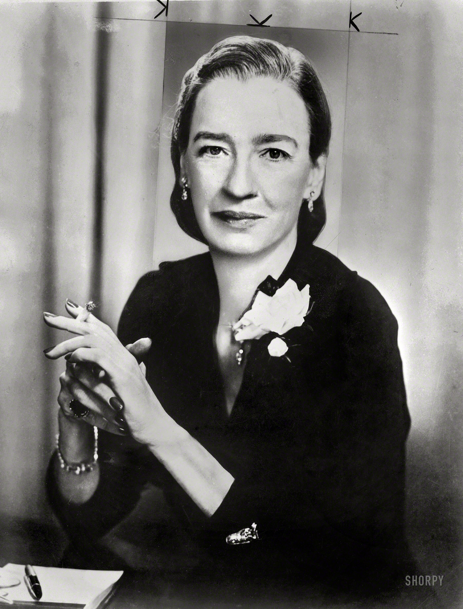
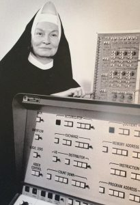
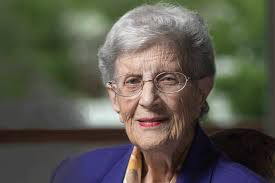

Ada Lovelace
Quando se fala no passado da tecnologia, não há como ir muito mais para trás. Em 1843, Augusta Ada King, a Condessa de Lovelace, traduzia os textos de Luigi Menabrea, um matemático italiano, sobre as ferramentas analíticas usadas por
Charles Babbage, um matemático inglês. Esse trabalho derivativo resultou no que, para muitos especialistas, é o primeiro algoritmo criado na história, muito antes da existência de máquinas que pudessem processá-lo.
Única filha legítima de Anne Isabella Milbanke e do poeta Lord Byron, ela foi uma das precursoras das ciências da computação. Seu trabalho estava relacionado à metodologia de cálculo de uma sequência de números de Bernoulli, sequências
de racionais com operações altamente complexas.
O único problema encontrado por Lovelace, na época, é que ela simplesmente não possuía o maquinário necessário para colocar seus estudos à prova. Seu algoritmo, entretanto, foi provado como correto anos depois de seu falecimento, quando
finalmente chegaram os equipamentos necessários para essa verificação. Hoje, ela dá nome a um prêmio da Sociedade Britânica de Computação que contempla avanços significativos em sistemas de informação.

Grace Murray Hopper
Hopper nasceu em Nova York. Em 1928, formou-se em Matemática e Física no Vassar College, continuando seus estudos na Universidade de Yale, onde defendeu o mestrado em 1930 e o doutorado em 1934 em Matemática. No ano de 1943, Hopper deixa
seu cargo de professora no Vassar College e entra para a Marinha, no WAVES (Women Accepted for Voluntary Emergency Service – Mulheres Aceitas para Serviço Voluntário de Emergência). Essa mudança não surpreendeu quem a conhecia, pois Hopper
vinha de uma família com tradições militares. Após a sua saída da Marinha Americana, Hopper foi designada para o Bureau of Ordinance Computation Project na Universidade de Harvard, onde trabalhou na programação da série de computadores Mark
I. Por seu pioneirismo e sucesso na programação de aplicações para os computadores Mark I, Mark II e Mark III, ela recebeu o Naval Ordinance Development Award.
Por volta de 1944, idealizou o conceito de sub-rotinas utilizado ainda nos dias de hoje, cujo objetivo era aproveitar módulos de comandos que fossem utilizados para diminuir o tempo e o esforço. Hopper é a responsável pelos termos bug e debug. Em 1945,
enquanto escrevia um programa para o computador Mark I, este parou de funcionar. Ao tentar encontrar o problema, achou uma mariposa (bug) interrompendo os circuitos da máquina e, ao retirá-la (debugging), a máquina voltou a funcionar. O Mark
I era uma máquina enorme, com três quartos de milhão de peças, oitocentos quilómetros de fios, várias rodas contadoras, mancais, garras de engate e relés.
A mariposa foi colada com fita adesiva no seu relatório, que hoje se encontra num museu. Até os dias atuais, sempre que há um erro num programa, diz-se que há um bug, e é necessário utilizar o debug para o resolver. Ainda desenvolvendo o seu trabalho
em Harvad, Hopper concebeu a ideia de escrever um programa que criasse um programa, ou nos termos atuais, construir um compilador.
Em 1949 junta-se à Eckert-Mauchly Computer Corporation, cujo objectivo era produzir computadores comerciais. Em 1952, Hopper desenvolveu o primeiro de uma série de compiladores (A-0) que foi com sendo aperfeiçoado com o tempo, resultando em mais duas
versões (A-1 e A-2).
Como fazia a grande maioria dos técnicos, os nomes dados aos programas não eram comerciais, e quando a quarta versão do compilador (A-3) foi finalizado, o departamento de vendas nomeou o compilador de MATH-MATIC. Hopper achava que as linguagens deveriam
ser mais amigáveis e desenvolveu uma linguagem baseada no inglês, o FLOW-MATIC, que foi a primeira e mais utilizada linguagem da época. Hopper exerceu grande influência na formulação de uma linguagem comum orientada para negócios, que deu
origem ao acrónimo COBOL (Common Business Oriented Language), linguagem utilizada ainda nos dias de hoje, e que foi baseada na linguagem FLOW-MATIC. Aos 85 anos, a 1 de Janeiro de 1992, Hopper morreu e o seu funeral teve honras militares.
Para a homenagear, a Marinha batizou um destroyer com o nome USS Hopper e uma moeda com sua esfinge foi produzida.
Margaret Hamilton
Em 20 de julho de 1969 ouvimos a frase “um pequeno passo para o homem, mas um grande salto para a humanidade”, essa frase foi dita durante o pouso da espaçonave Apollo 11 em segurança na Lua, mas existe uma história por trás de toda a criação e lançamento de uma espaçonave ao espaço: Margaret Hamilton. Aos 25 anos de idade Margaret juntou – se à Nasa, agência norte – americana responsável pela pesquisa e desenvolvimento de tecnologias e programas de exploração espacial, sem saber que estaria liderando uma revolução científica que mudaria o mundo. Margaret Hamilton programava sequências de código que seriam adicionadas ao computador do módulo de comando do Apollo, porém minutos antes da espaçonave tocar a superfície da lua, o computador do piloto começou a emitir mensagens de erro, entretanto Margaret havia programado o computador para focar na tarefa principal, fazendo assim com ignorasse as demais atividades que surgiriam e viriam a “atrapalhar” a missão, sendo assim a espaçonave foi capaz de realizar o pouso em segurança.
As Pioneiras do ENIAC
Antes de linguagens de programação e sistemas computadorizados para cálculos matemáticos como os que já citamos aqui, entretanto, os primeiros computadores dependiam da influência humana e de aparatos mecânicos para funcionarem, e dependiam
bastante dos nossos cérebros. Quando se falava em trajetórias de mísseis e bombas, então, a coisa se tornava ainda mais complicada. Foi aí que entraram as “garotas do ENIAC”, um grupo de seis mulheres que foram as primeiras “computors” da
história da informática.
Trabalhando em um dos primeiros supercomputadores criados, na Escola de Engenharia Moore, no estado americano da Pennsylvania, Betty Snyder (a única que não aparece na foto acima), Marlyn Wescoff, Fran Bilas, Kay McNulty, Ruth Lichterman
e Adele Goldstine eram responsáveis pela configuração do ENIAC, dando a ele as instruções para realizar os cálculos necessários. Isso significava que elas lidavam, diariamente, com mais de três mil interruptores e botões que ligavam um hardware
de 80 toneladas, tudo manualmente.
Mais do que operar o maquinário, elas foram responsáveis por dar o pontapé inicial em muitos protocolos usados até hoje. Goldstine, por exemplo, criou o primeiro manual do ENIAC, com instruções de uso e melhores práticas, enquanto Goldstine
e Jennings tiveram influência fundamental em sistemas de “salvamento” de configurações e preferências. Fora do supercomputador, ainda, Snyder criou o primeiro sistema informatizado para o censo americano, inventou o teclado numérico para facilitar
na programação e, curiosamente, foi uma das percursoras dos computadores na cor “gelo”, totalmente comuns nos anos de 1990.

Irmã Mary Kenneth Kellerr
Considerada a primeira mulher a receber um doutorado em ciências da computação, Keller se formou na Universidade Washington, na cidade de St. Louis, nos Estados Unidos. O diploma veio em 1965, mas desde 1958, ela já trabalhava em oficinais
de informática enquanto a indústria ainda era menos do que incipiente. Sua contribuição, entretanto, foi fundamental na criação da linguagem de programação BASIC, criada com fins didáticos e utilizada por décadas, até ser substituída pelo
Pascal, mais arrojado, seguro e seguir de melhores práticas.
Ela enxergou desde cedo o potencial dos computadores como uma ferramenta educacional e voltada para o desenvolvimento humano, seja por meio de um maior acesso à informação ou simplesmente como suporte na sala de aula. Tanto que sempre
trabalhou na área do ensino, fundando um departamento de ciências da computação na Universidade Clarke, no estado americano do Iowa, o qual permaneceu dirigindo até seu falecimento, em janeiro de 1985.
Mary Kenneth Keller escreveu quatro livros sobre computação e programação, e as obras são, até hoje, uma referência. Ela também foi uma das primeiras vozes pela inclusão das mulheres no ramo da informática. Hoje, batiza o Centro de Ciências
da Computação da universidade onde atuou por 20 anos, além de ter uma bolsa de estudos na área que também leva o seu nome.
Hedy Lammar
Considerada a "mulher mais linda do mundo", Hedy Lammar foi dona de uma inteligência absurda. Durante a segunda guerra mundial, Hedy criou o que nos dias atuais, é usado em redes celulares, no GPS, Bluetooth e até mesmo no Wi-Fi.
A invenção se baseou em ao observar juntamente com o compositor George Antheil, que ao tocar um piano as teclas emitiam uma frequência de longo alcance diferente, e assim como nas melodias, as quais as notas alternavam - se rapidamente, fazendo com que a ideia fosse usada para que as forças inimigas difessem grande dificuldade para detectar esse registro alternado, permitindo a orientação de mísseis e torpedos.

Jean Sammet
Erroneamente chamada de primeira mulher a obter um PhD em ciências da computação – ela obteve o diploma apenas em 1968, três anos depois, Sammet foi a criadora de uma das primeiras linguagens computadorizadas existentes.
O FORMAC, que entrou em uso no final dos anos 1960 pelas mãos da IBM, era utilizado para manipular fórmulas matemáticas e auxiliar em cálculos complexos.
Nada mais justo vindo das mãos de uma mulher que, antes de se tornar doutora em ciências da computação, trazia consigo duas formações distintas em matemática, uma pela Universidade de Illinois e outra pelo Mount Holyoke College. Por
causa disso e de seus conhecimentos em informática, ela trabalhou durante 27 anos na IBM, que por muito tempo foi a empresa símbolo dessa indústria em todo o mundo.
Ela também teve influência importante na criação do COBOL e participou de diversas entidades voltadas à inclusão das mulheres na indústria da tecnologia. Sammet também presidiu a ACM (Associação para Maquinaria de Computação, na tradução
do inglês), uma iniciativa voltada para o uso da informática em projetos científicos e educacionais, com mais de 70 mil membros.
Karen Sparck Jones
Mais uma daquelas mulheres que você provavelmente nem sabia que existiram, mas cuja influência permeia o seu dia a dia até hoje, Jones realizou um trabalho focado em processamento de linguagem. Ela foi uma das criadoras do conceito de
“inverso da frequência em documentos”, a base do que hoje são os sistemas de busca e localização de conteúdo e pedra fundamental de companhias como o Google, por exemplo.
Trata-se de um sistema de recuperação de informações que minera de forma extremamente veloz os dados em um conjunto de documentos. A busca é feita pelos termos que mais aparecem nos textos, que quando cruzados com um sistema de filtragem,
mostram a relevância de diferentes temas. É o que define, de forma básica, se uma página, por exemplo, está falando sobre a influência das mulheres no mundo da tecnologia ou se apenas cita as palavras “mulheres” e “tecnologia”, mas em um contexto
completamente diferente.
Os estudos de Karen Sparck Jones foram desenvolvidos no laboratório de computação da Universidade de Cambridge, na Inglaterra, onde ela trabalhou por quase 30 anos, entre 1974 e 2002. Ela se aposentou naquele ano, mas continuou se dedicado
a causas de inclusão das mulheres no mundo da tecnologia até seu falecimento, em 2007.
Carol Shaw
Citada como a primeira mulher a trabalhar na indústria dos games, Carol Shaw foi uma das funcionárias originais da Atari. Apesar disso, ela passou pouco tempo na empresa, sendo contratada rapidamente pela Activision e participando do
desenvolvimento de um dos maiores clássicos dos games, River Raid.
Seu cartão de visitas a atribuía a função de “engenheira de software para microprocessadores”, o que significava que ela atuava também nos sistemas do próprio console. E trabalhando com uma máquina com apenas 128 bytes de memória RAM,
ela foi a responsável por criar o primeiro sistema de geração procedural de conteúdo, o que significava que, em River Raid, uma fase nunca era igual à outra. Oponentes, itens e objetos do cenário apareciam de forma randômica, em uma prática
que é utilizada até hoje.
Em seu currículo, também estão games clássicos como 3D Tic Tac Toe, Super Breakout e Happy Trails, seu últmo game com a Activision. Ela se aposentou em 1990 e mora na Califórnia, nos Estados Unidos, onde realiza trabalho voluntário.
Roberta Williams
E já que estamos falando de video game, não há como não citar, também, a influência de Roberta Williams nesse segmento. Ela, ao lado de seu marido, Ken, foi a fundadora da On-Line Systems, que mais tarde, se tornaria a Sierra, um dos
maiores nomes da indústria de jogos eletrônicos, tendo participado do desenvolvimento e/ou distribuição de grandes nomes como King’s Quest, Phantasmagoria, Half-Life e Counter-Strike.
A história de Roberta com os games começa quando ela foi apresentada, pelo marido, a Adventure, um game de aventura baseado unicamente em texto. Até hoje citado por ela como um de seus preferidos, o título a levou a pensar que os games
poderiam ter um incrível potencial visual, o que a levou a desenvolver, ao lado do marido, Mistery House. O título com linhas simples foi a base fundamental da Sierra, que se tornou uma das empresas mais icônicas do mercado.
Aos poucos, a empresa foi acumulando estúdios e passando por diversas reestruturações, vendas e organizações internas. Em meados dos anos 2000, a companhia foi adquirida pela Vivendi, que mais tarde, se uniu à Activision para criar o
que hoje é a maior empresa de games do mercado. Em 2008, entretanto, a Sierra deixou de existir, voltando à vida em 2014 e existindo até os dias de hoje.
Esse retorno também garantiu a Roberta e Ken Williams um prêmio honorário na cerimônia dos The Game Awards de 2014. No evento, eles foram considerados “ícones da indústria” e aproveitaram a ocasião para anunciar o reboot de King’s Quest,
com episódios ainda a serem lançados. A honraria foi apresentada com um relato emocionado de Neil Druckmann, produtor de The Last of Us e Uncharted 4: A Thief's End, afirmando que aprendeu a falar inglês e decidiu trabalhar na indústria devido
à influência de King's Quest e das obras da Sierra.

Radia Perlman
Se Tim Berners-Lee é o pai da internet, Radia Perlman pode ser considerada como a mãe. Designer de software e engenheira de redes, ela foi a responsável pela criação do protocolo STP (Spanning Tree Protocol), que melhorou a performance
de sistemas conectados ao evitar a realização de loops de dados, garantindo que as informações trafeguem mesmo em caso de problemas, sem ficarem perdidas tentando firmar uma conexão inexistente.
Imagine que você precise chegar ao outro lado de um rio e possui diversas alternativas para fazer isso – uma ponte de madeira frágil, uma com elevações, outra que desce até a água para depois subir e, finalmente, aquela em linha reta,
a mais eficiente, feita de concreto. O protocolo de Perlman permite que os dados, como você, saibam que aquele é o caminho mais rápido para chegar ao destino. Caso algo dê errado, ele também permite mensurar qual é o segundo melhor, e assim
por diante.
Ela também é uma das pioneiras no ensino de programação e arquiteturas de redes para crianças, além de ter sido uma das criadoras do TORTIS, uma linguagem de programação com fins também educacionais, só que de robótica. Ela também foi
a responsável por diversos protocolos de segurança de rede e, hoje, trabalha na Intel, além de ser dona de mais de 50 patentes relacionadas a tecnologias de conexão.
Frances Allen
A primeira mulher a ganhar o prestigiado Turing Award, Allen trabalhou durante 45 anos na IBM, onde esteve no centro de muitos dos avanços da computação e, principalmente, na chegada dessas máquinas às casas das pessoas comuns. É dela,
por exemplo, algumas das principais bases de sistemas de otimização de código e paralelização, permitindo que softwares avançados rodassem de maneira melhor até mesmo nos computadores mais fracos.
Além disso, seu conhecimento em programação a levou a criar alguns dos primeiros sistemas de segurança da NSA, a agência de segurança nacional do governo dos EUA. Seus trabalhos no setor de inteligência, claro, nunca foram conhecidos
completamente por questões de sigilo, mas garantiram a ela uma influência fundamental no estado da segurança da informação como a conhecemos hoje.